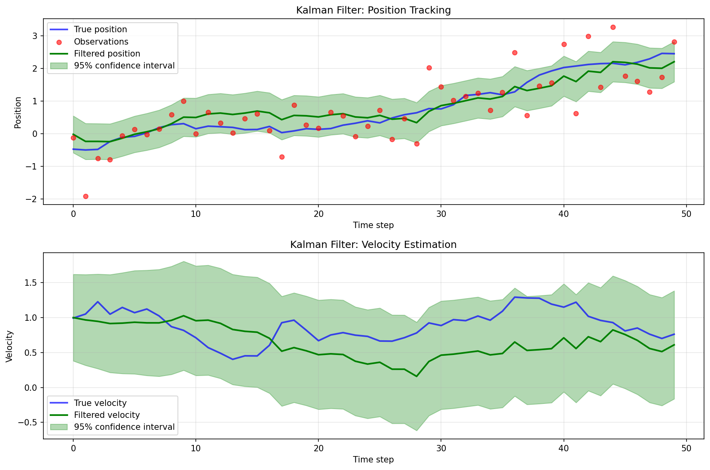

Dynamax Integration: Kalman Filtering with Linear Gaussian SSM
This example demonstrates how to use a dynamax Linear Gaussian State Space Model (LGSSM) with cuthbert to perform fast parallel-in-time Kalman filtering. dynamax provides a rich ecosystem for defining state space models, while cuthbert offers efficient filtering algorithms.
Setup and imports
import jax.numpy as jnp
import jax.random as jr
from dynamax.linear_gaussian_ssm import LinearGaussianSSM, lgssm_filter
import matplotlib.pyplot as plt
import cuthbert
from cuthbert.gaussian import kalman
Create and initialize a Dynamax Linear Gaussian SSM
Let's create a simple linear Gaussian state space model for tracking a 1D position and velocity over time. This is a classic constant velocity model.
# Model parameters
state_dim = 2 # position and velocity
emission_dim = 1 # we only observe position
num_timesteps = 50
dt = 0.1 # time step
# Create the Linear Gaussian SSM model
lgssm = LinearGaussianSSM(state_dim=state_dim, emission_dim=emission_dim)
# Define dynamics: constant velocity model
# x_t = [position, velocity]
# x_{t+1} = F @ x_t + noise
F = jnp.array([[1.0, dt],
[0.0, 1.0]])
# Process noise covariance
Q = jnp.array([[0.01, 0.0],
[0.0, 0.01]])
# Observation model: we only observe position
# y_t = H @ x_t + noise
H = jnp.array([[1.0, 0.0]])
# Observation noise covariance
R = jnp.array([[0.5]])
# Initial state distribution
m0 = jnp.array([0.0, 1.0]) # start at position 0 with velocity 1
P0 = jnp.eye(state_dim) * 0.1
# Initialize model parameters with our custom values
key = jr.PRNGKey(42)
params, props = lgssm.initialize(
key=key,
initial_mean=m0,
initial_covariance=P0,
dynamics_weights=F,
dynamics_covariance=Q,
emission_weights=H,
emission_covariance=R
)
print(f"Dynamics matrix F:\n{params.dynamics.weights}")
print(f"Observation matrix H:\n{params.emissions.weights}")
Running the above code yields
Generate sample data
Now we'll sample a sequence of observations from the model:
# Sample from the model
key, sample_key = jr.split(key)
true_states, observations = lgssm.sample(params, sample_key, num_timesteps)
print(f"Generated {len(observations)} observations")
print(f"True states shape: {true_states.shape}")
print(f"Observations shape: {observations.shape}")
print(f"First 5 observations: {observations[:5].flatten()}")
Running the above code yields
Generated 50 observations
True states shape: (50, 2)
Observations shape: (50, 1)
First 5 observations: [-0.12673497 -1.9195632 -0.7634685 -0.7985211 -0.06220094]
Build cuthbert Kalman filter from dynamax model
The key to integrating dynamax with cuthbert is to extract the model matrices and wrap them in cuthbert's parameter extraction functions.
def build_cuthbert_kalman_filter_from_dynamax(lgssm_model, lgssm_params, observations):
"""Build a cuthbert Kalman filter from a dynamax Linear Gaussian SSM.
Args:
lgssm_model: The dynamax LinearGaussianSSM model object
lgssm_params: The parameters of the LGSSM
observations: The observation sequence
Returns:
filter_obj: A cuthbert Filter object
model_inputs: Time indices for filtering
"""
# Extract parameters from dynamax model
m0 = lgssm_params.initial.mean
chol_P0 = jnp.linalg.cholesky(lgssm_params.initial.cov)
F = lgssm_params.dynamics.weights
c = lgssm_params.dynamics.bias
chol_Q = jnp.linalg.cholesky(lgssm_params.dynamics.cov)
H = lgssm_params.emissions.weights
d = lgssm_params.emissions.bias
chol_R = jnp.linalg.cholesky(lgssm_params.emissions.cov)
def get_init_params(model_inputs):
"""Return initial state distribution parameters."""
return m0, chol_P0
def get_dynamics_params(model_inputs):
"""Return dynamics parameters.
Handles differing conventions, dynamax has y_0 but cuthbert does not.
"""
t = model_inputs - 1
F_t = jnp.where(t == 0, jnp.eye(state_dim), F)
c_t = jnp.where(t == 0, jnp.zeros_like(c), c)
chol_Q_t = jnp.where(t == 0, jnp.zeros_like(chol_Q), chol_Q)
return F_t, c_t, chol_Q_t
def get_observation_params(model_inputs):
"""Return observation parameters and the observation at time t."""
t = model_inputs
y_t = observations[t - 1]
return H, d, chol_R, y_t
# Build the Kalman filter
filter_obj = kalman.build_filter(
get_init_params=get_init_params,
get_dynamics_params=get_dynamics_params,
get_observation_params=get_observation_params
)
# Model inputs are just time indices
model_inputs = jnp.arange(len(observations) + 1) # +1 for the initial time step
return filter_obj, model_inputs
# Create the cuthbert Kalman filter
filter_obj, model_inputs = build_cuthbert_kalman_filter_from_dynamax(lgssm, params, observations)
Run the Kalman filter
Now we can run the cuthbert Kalman filter to obtain the filtering distributions:
# Run Kalman filtering
filtered_states = cuthbert.filter(filter_obj, model_inputs)
# Extract filtering results - remove initial time step
filtered_means = filtered_states.mean[1:]
filtered_chol_covs = filtered_states.chol_cov[1:]
log_likelihoods = filtered_states.log_normalizing_constant[1:]
total_log_likelihood = log_likelihoods[-1]
print(f"Filtered means shape: {filtered_means.shape}")
print(f"Total log likelihood: {total_log_likelihood:.2f}")
print(f"First 5 filtered positions: {filtered_means[:5, 0]}")
# Compute filtering covariances from Cholesky factors
filtered_covs = jnp.einsum('tij,tkj->tik', filtered_chol_covs, filtered_chol_covs)
Running the above code yields
Filtered means shape: (50, 2)
Total log likelihood: -55.41
First 5 filtered positions: [-0.0211225 -0.2383174 -0.23843466 -0.24582891 -0.13977882]
Compare with dynamax filtering
Let's verify our results match dynamax's built-in Kalman filtering:
# Run dynamax's Kalman filter for comparison
dynamax_posterior = lgssm_filter(params, observations)
dynamax_filtered_means = dynamax_posterior.filtered_means
dynamax_filtered_covs = dynamax_posterior.filtered_covariances
# Compare means
mean_max_diff = jnp.max(jnp.abs(filtered_means - dynamax_filtered_means))
print(f"Maximum difference in filtered means: {mean_max_diff:.2e}")
# Compare covariances
cov_max_diff = jnp.max(jnp.abs(filtered_covs - dynamax_filtered_covs))
print(f"Maximum difference in filtered covariances: {cov_max_diff:.2e}")
# Compare log likelihoods
dynamax_log_likelihood = dynamax_posterior.marginal_loglik
print(f"cuthbert log likelihood: {total_log_likelihood:.2f}")
print(f"dynamax log likelihood: {dynamax_log_likelihood:.2f}")
print(f"Difference: {abs(total_log_likelihood - dynamax_log_likelihood):.2e}")
Running the above code yields
Maximum difference in filtered means: 4.77e-07
Maximum difference in filtered covariances: 1.19e-07
cuthbert log likelihood: -55.41
dynamax log likelihood: -55.41
Difference: 1.53e-05
Visualize results
Finally, let's visualize the filtering results:

Code to plot the filtering results
fig, axes = plt.subplots(2, 1, figsize=(12, 8))
# Extract position and velocity
true_positions = true_states[:, 0]
true_velocities = true_states[:, 1]
filtered_positions = filtered_means[:, 0]
filtered_velocities = filtered_means[:, 1]
# Compute 95% confidence intervals for position
position_stds = jnp.sqrt(filtered_covs[:, 0, 0])
upper_bound = filtered_positions + 1.96 * position_stds
lower_bound = filtered_positions - 1.96 * position_stds
# Plot position over time
ax = axes[0]
time_steps = jnp.arange(num_timesteps)
ax.plot(time_steps, true_positions, 'b-', label='True position', linewidth=2, alpha=0.7)
ax.scatter(time_steps, observations.flatten(), c='red', s=30,
label='Observations', alpha=0.6, zorder=5)
ax.plot(time_steps, filtered_positions, 'g-', label='Filtered position', linewidth=2)
ax.fill_between(time_steps, lower_bound, upper_bound, alpha=0.3, color='green',
label='95% confidence interval')
ax.set_xlabel('Time step')
ax.set_ylabel('Position')
ax.set_title('Kalman Filter: Position Tracking')
ax.legend()
ax.grid(True, alpha=0.3)
# Plot velocity over time
ax = axes[1]
velocity_stds = jnp.sqrt(filtered_covs[:, 1, 1])
velocity_upper = filtered_velocities + 1.96 * velocity_stds
velocity_lower = filtered_velocities - 1.96 * velocity_stds
ax.plot(time_steps, true_velocities, 'b-', label='True velocity', linewidth=2, alpha=0.7)
ax.plot(time_steps, filtered_velocities, 'g-', label='Filtered velocity', linewidth=2)
ax.fill_between(time_steps, velocity_lower, velocity_upper, alpha=0.3, color='green',
label='95% confidence interval')
ax.set_xlabel('Time step')
ax.set_ylabel('Velocity')
ax.set_title('Kalman Filter: Velocity Estimation')
ax.legend()
ax.grid(True, alpha=0.3)
plt.tight_layout()
plt.savefig('docs/assets/dynamax_integration.png', dpi=150, bbox_inches='tight')
print("Visualization saved to docs/assets/dynamax_integration.png")
plt.close()
Key takeaways
- Seamless integration:
dynamaxLinear Gaussian SSMs can be easily used withcuthbert's efficient Kalman filtering algorithms - Parameter extraction pattern: The key is extracting
dynamaxmodel parameters (F, Q, H, R, etc.) and wrapping them incuthbert's parameter extraction functions - Square-root filtering:
cuthbertuses Cholesky factors for numerical stability, which we compute fromdynamax's covariance matrices - Consistent results:
cuthbertanddynamaxproduce identical filtering distributions (up to numerical precision)
This integration pattern works for any Linear Gaussian State Space Model in
dynamax. For nonlinear models, you could similarly integrate dynamax's
representation with, e.g., cuthbert's particle filters or extended Kalman
filters.
Next Steps
- Smoothing: Use
cuthbert.smootherto perform backward smoothing for more accurate state estimates. - Temporal parallelization: Enable parallel-in-time filtering for faster computation on longer time series - see the temporal parallelization example.
- More examples: Check out other examples including Kalman tracking and parameter estimation.